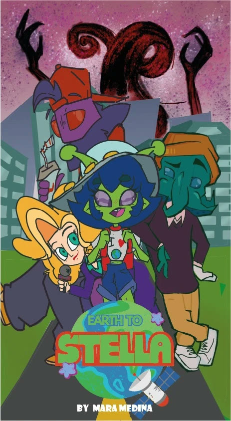
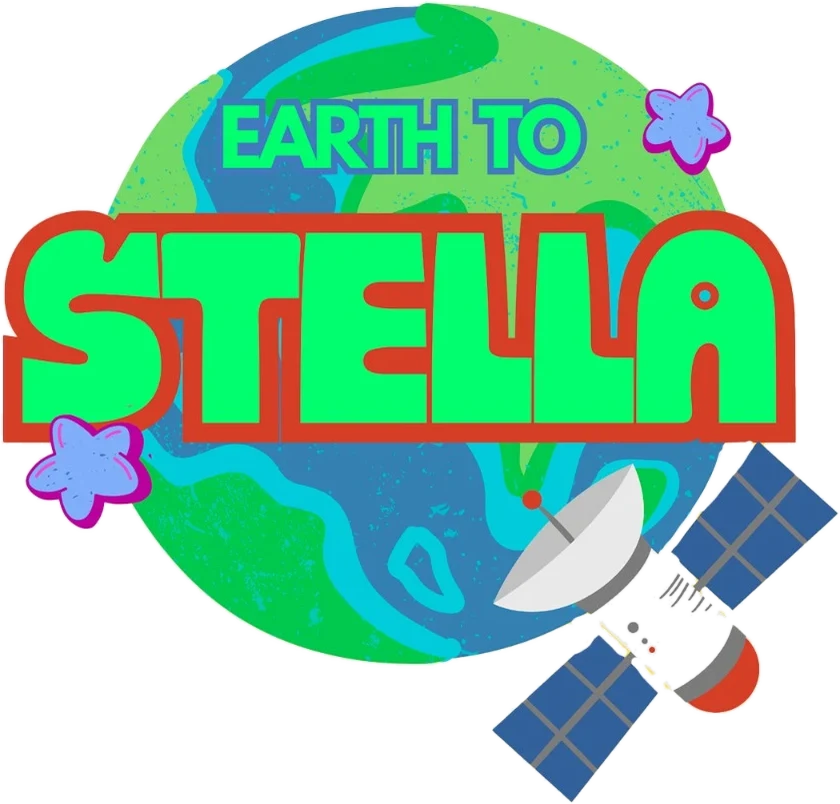

Earth to Stella


“El mundo es más grande de lo que imaginas”
Una turista alienígena, un escritor descendiente de Cthulhu, un Mothman repartidor y una reportera de sangre reptiliana intentan sobrevivir a la vida adulta en una ciudad de críptidos, sin sospechar que uno de ellos podría traer consigo el fin del mundo.
- Género
- Comedia absurda y surrealismo
- Técnica
- Animación 2D digital
- Formato
- 12 episodios × 22 min
- Público
- TV-PG
Personajes
Haz clic en cada personaje para ver su ficha.